{kind=link}
{kind=link}

Length comps, retained, Winter (N) (plot 3 of 3)
file: comp_lenfit_flt1mkt2_page3.png
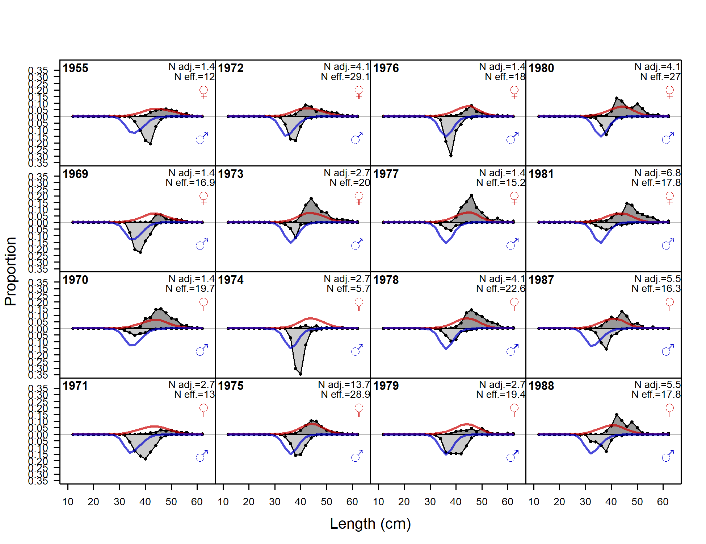
Length comps, retained, Winter (N) (plot 1 of 3).
'N adj.' is the input sample size after data-weighting adjustment. N eff. is the calculated effective sample size used in the McAllister-Iannelli tuning method.
file: comp_lenfit_flt1mkt2_page1.png
Length comps, retained, Winter (N) (plot 2 of 3)
file: comp_lenfit_flt1mkt2_page2.png
Length comps, retained, Winter (N) (plot 3 of 3)
file: comp_lenfit_flt1mkt2_page3.png
Pearson residuals, retained, Winter (N) (max=3.47) (plot 3 of 3)
Closed bubbles are positive residuals (observed > expected) and open bubbles are negative residuals (observed < expected).
file: comp_lenfit_residsflt1mkt2_page3.png
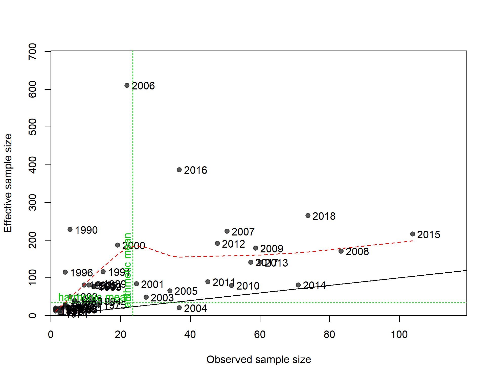
N-EffN comparison, Length comps, retained, Winter (N)
file: comp_lenfit_sampsize_flt1mkt2.png
.png)
Mean length for Winter (N) with 95% confidence intervals based on current samples sizes.
Francis data weighting method TA1.8: thinner intervals (with capped ends) show result of further adjusting sample sizes based on suggested multiplier (with 95% interval) for len data from Winter (N):
0.8112 (0.541-1.4532)
For more info, see
Francis, R.I.C.C. (2011). Data weighting in statistical fisheries stock assessment models. Can. J. Fish. Aquat. Sci. 68: 1124-1138. https://doi.org/10.1139/f2011-025
Length comps, discard, Winter (N).
'N adj.' is the input sample size after data-weighting adjustment. N eff. is the calculated effective sample size used in the McAllister-Iannelli tuning method.
file: comp_lenfit_flt1mkt1.png
Pearson residuals, discard, Winter (N) (max=6.35)
Closed bubbles are positive residuals (observed > expected) and open bubbles are negative residuals (observed < expected).
file: comp_lenfit_residsflt1mkt1.png
N-EffN comparison, Length comps, discard, Winter (N)
file: comp_lenfit_sampsize_flt1mkt1.png
Mean length for Winter (N) with 95% confidence intervals based on current samples sizes.
Francis data weighting method TA1.8: thinner intervals (with capped ends) show result of further adjusting sample sizes based on suggested multiplier (with 95% interval) for len data from Winter (N):
0.8112 (0.5606-1.4161)
For more info, see
Francis, R.I.C.C. (2011). Data weighting in statistical fisheries stock assessment models. Can. J. Fish. Aquat. Sci. 68: 1124-1138. https://doi.org/10.1139/f2011-025
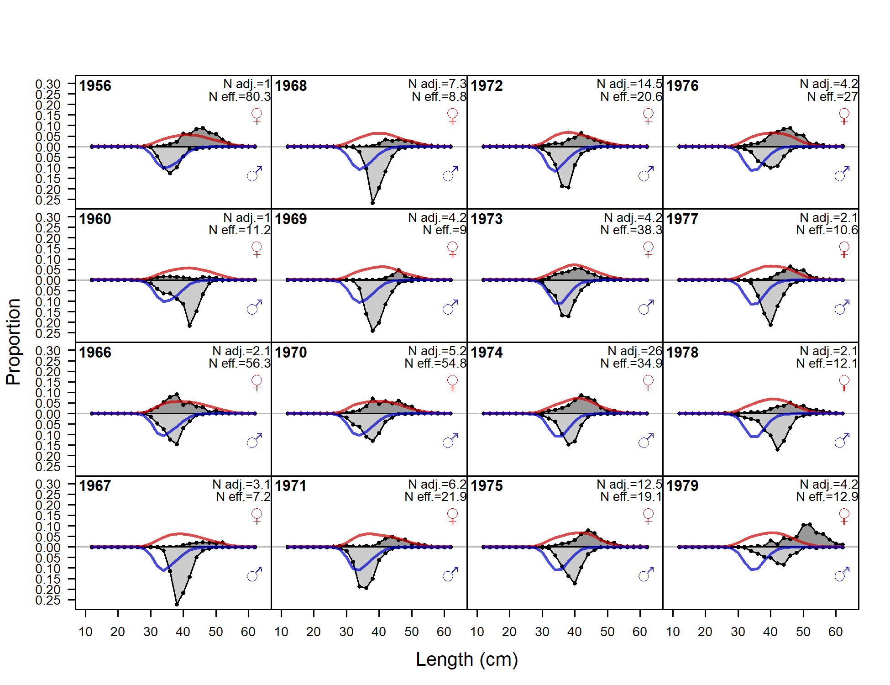
Length comps, retained, Summer (N) (plot 1 of 4).
'N adj.' is the input sample size after data-weighting adjustment. N eff. is the calculated effective sample size used in the McAllister-Iannelli tuning method.
file: comp_lenfit_flt2mkt2_page1.png
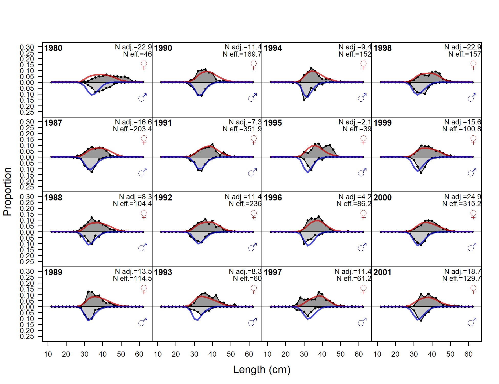
Length comps, retained, Summer (N) (plot 2 of 4)
file: comp_lenfit_flt2mkt2_page2.png
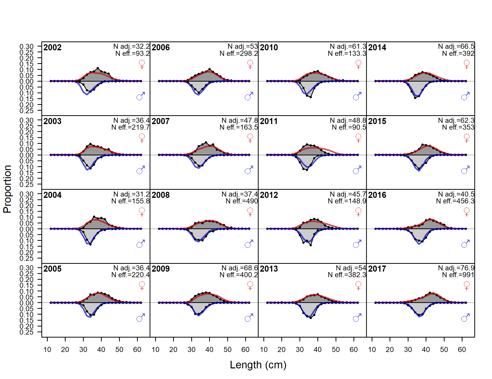
Length comps, retained, Summer (N) (plot 3 of 4)
file: comp_lenfit_flt2mkt2_page3.png
Length comps, retained, Summer (N) (plot 4 of 4)
file: comp_lenfit_flt2mkt2_page4.png
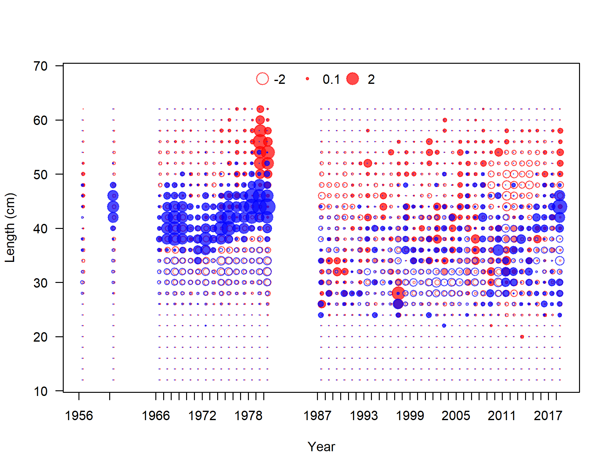
Pearson residuals, retained, Summer (N) (max=3.37) (plot 4 of 4)
Closed bubbles are positive residuals (observed > expected) and open bubbles are negative residuals (observed < expected).
file: comp_lenfit_residsflt2mkt2_page4.png

N-EffN comparison, Length comps, retained, Summer (N)
file: comp_lenfit_sampsize_flt2mkt2.png
.png)
Mean length for Summer (N) with 95% confidence intervals based on current samples sizes.
Francis data weighting method TA1.8: thinner intervals (with capped ends) show result of further adjusting sample sizes based on suggested multiplier (with 95% interval) for len data from Summer (N):
0.8918 (0.6211-1.3848)
For more info, see
Francis, R.I.C.C. (2011). Data weighting in statistical fisheries stock assessment models. Can. J. Fish. Aquat. Sci. 68: 1124-1138. https://doi.org/10.1139/f2011-025
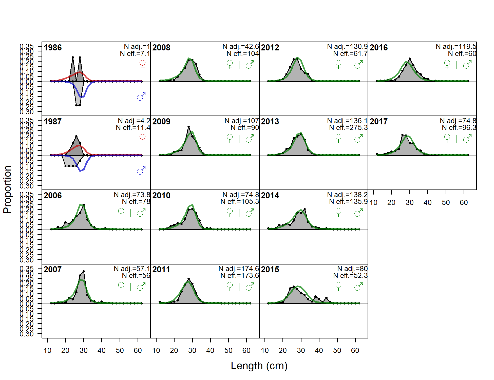
Length comps, discard, Summer (N).
'N adj.' is the input sample size after data-weighting adjustment. N eff. is the calculated effective sample size used in the McAllister-Iannelli tuning method.
file: comp_lenfit_flt2mkt1.png

Pearson residuals, discard, Summer (N) (max=6.21)
Closed bubbles are positive residuals (observed > expected) and open bubbles are negative residuals (observed < expected).
file: comp_lenfit_residsflt2mkt1.png
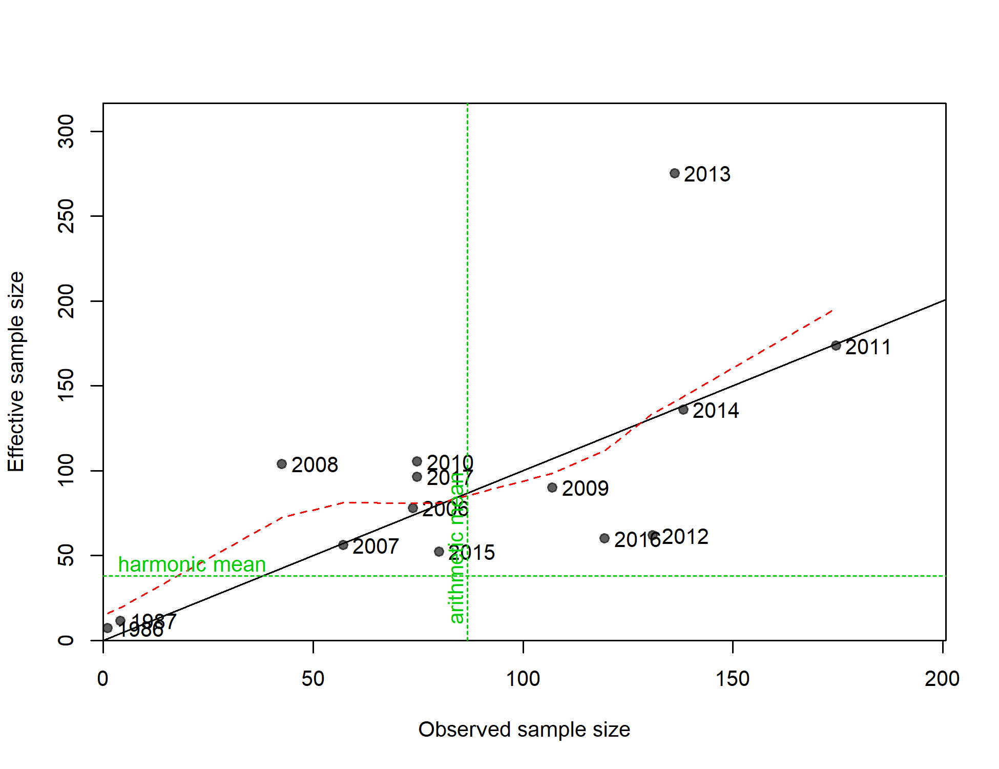
N-EffN comparison, Length comps, discard, Summer (N)
file: comp_lenfit_sampsize_flt2mkt1.png
Mean length for Summer (N) with 95% confidence intervals based on current samples sizes.
Francis data weighting method TA1.8: thinner intervals (with capped ends) show result of further adjusting sample sizes based on suggested multiplier (with 95% interval) for len data from Summer (N):
0.8918 (0.6525-1.4398)
For more info, see
Francis, R.I.C.C. (2011). Data weighting in statistical fisheries stock assessment models. Can. J. Fish. Aquat. Sci. 68: 1124-1138. https://doi.org/10.1139/f2011-025
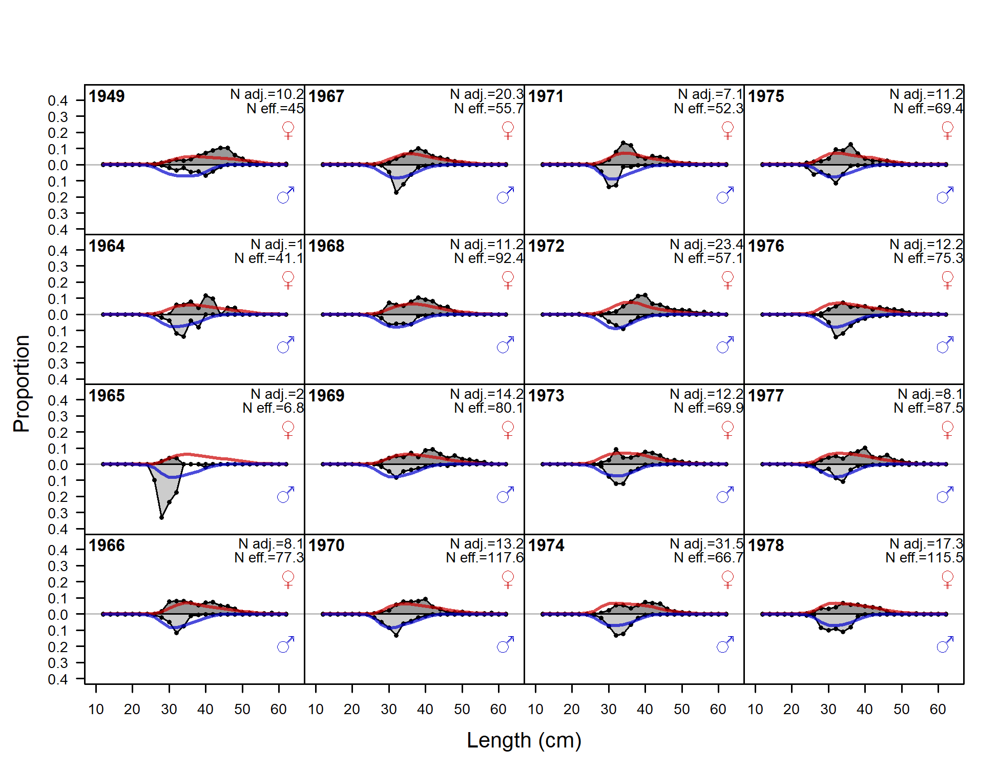
Length comps, retained, Winter (S) (plot 1 of 3).
'N adj.' is the input sample size after data-weighting adjustment. N eff. is the calculated effective sample size used in the McAllister-Iannelli tuning method.
file: comp_lenfit_flt3mkt2_page1.png
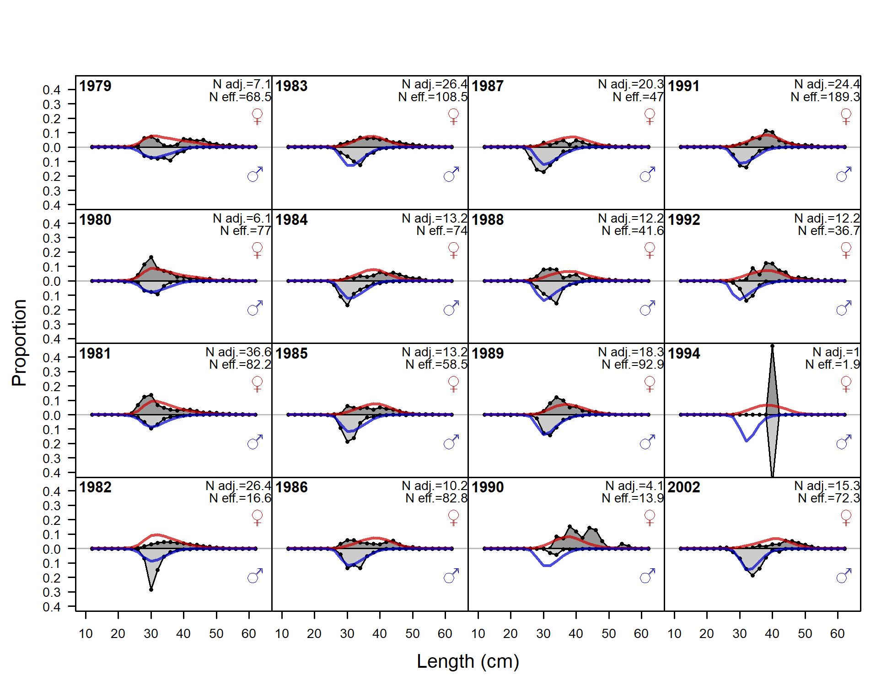
Length comps, retained, Winter (S) (plot 2 of 3)
file: comp_lenfit_flt3mkt2_page2.png
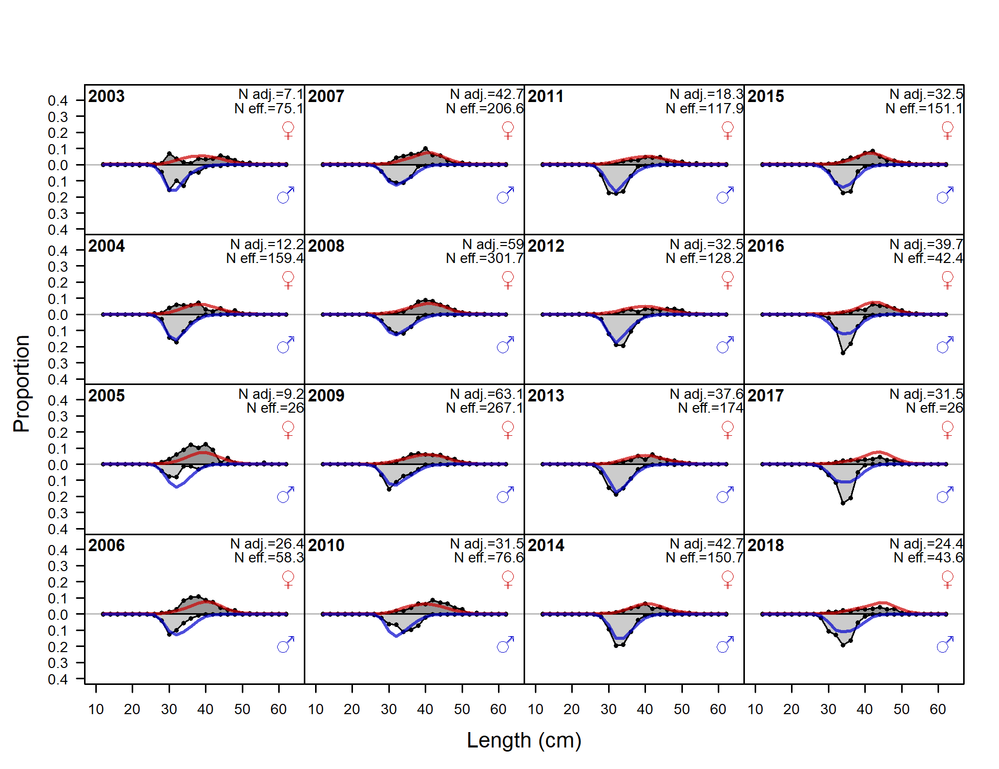
Length comps, retained, Winter (S) (plot 3 of 3)
file: comp_lenfit_flt3mkt2_page3.png
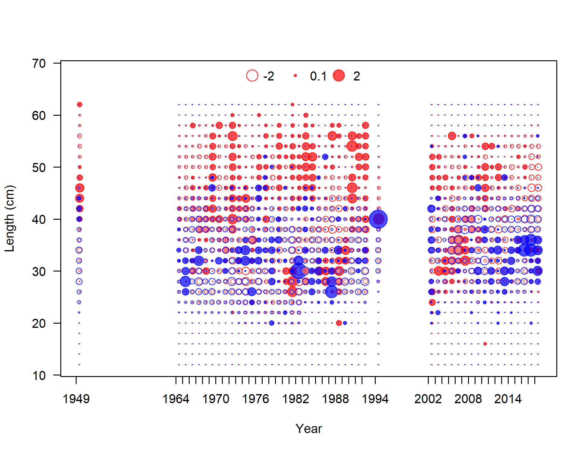
Pearson residuals, retained, Winter (S) (max=4.93) (plot 3 of 3)
Closed bubbles are positive residuals (observed > expected) and open bubbles are negative residuals (observed < expected).
file: comp_lenfit_residsflt3mkt2_page3.png

N-EffN comparison, Length comps, retained, Winter (S)
file: comp_lenfit_sampsize_flt3mkt2.png
.png)
Mean length for Winter (S) with 95% confidence intervals based on current samples sizes.
Francis data weighting method TA1.8: thinner intervals (with capped ends) show result of further adjusting sample sizes based on suggested multiplier (with 95% interval) for len data from Winter (S):
1.0433 (0.757-1.571)
For more info, see
Francis, R.I.C.C. (2011). Data weighting in statistical fisheries stock assessment models. Can. J. Fish. Aquat. Sci. 68: 1124-1138. https://doi.org/10.1139/f2011-025
Length comps, discard, Winter (S).
'N adj.' is the input sample size after data-weighting adjustment. N eff. is the calculated effective sample size used in the McAllister-Iannelli tuning method.
file: comp_lenfit_flt3mkt1.png
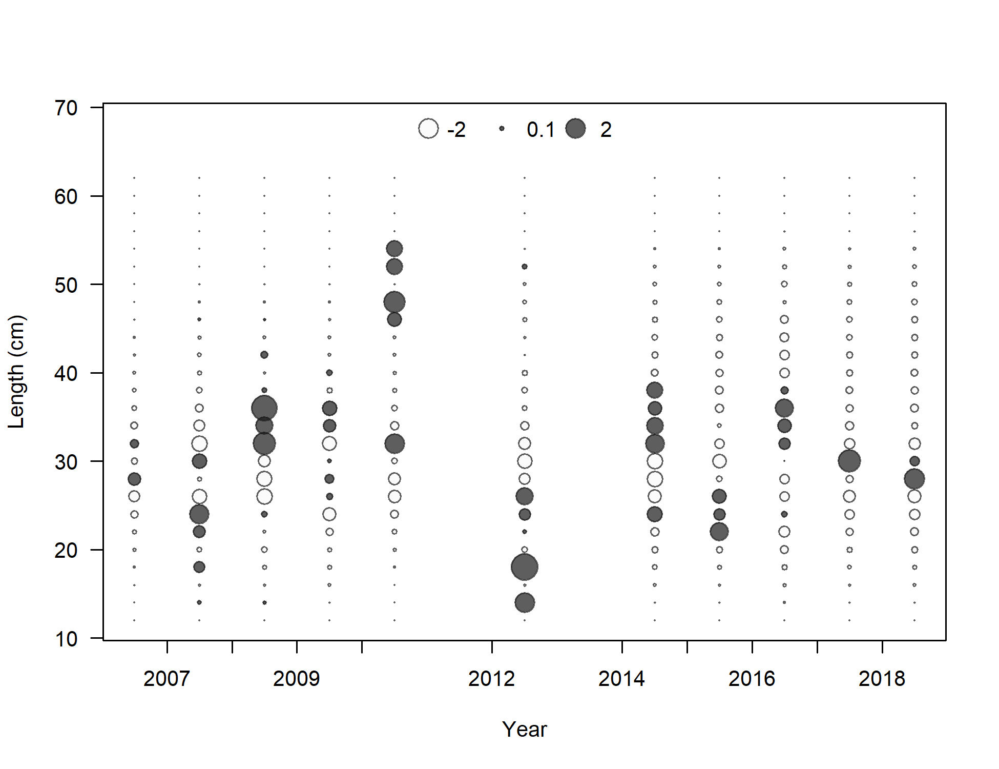
Pearson residuals, discard, Winter (S) (max=3.58)
Closed bubbles are positive residuals (observed > expected) and open bubbles are negative residuals (observed < expected).
file: comp_lenfit_residsflt3mkt1.png
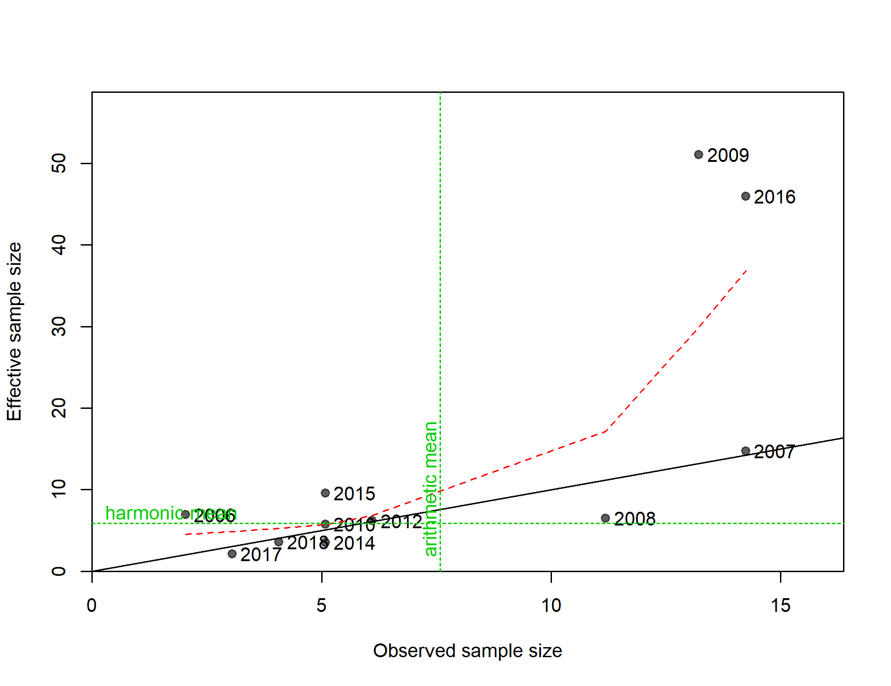
N-EffN comparison, Length comps, discard, Winter (S)
file: comp_lenfit_sampsize_flt3mkt1.png
Mean length for Winter (S) with 95% confidence intervals based on current samples sizes.
Francis data weighting method TA1.8: thinner intervals (with capped ends) show result of further adjusting sample sizes based on suggested multiplier (with 95% interval) for len data from Winter (S):
1.0433 (0.7769-1.5799)
For more info, see
Francis, R.I.C.C. (2011). Data weighting in statistical fisheries stock assessment models. Can. J. Fish. Aquat. Sci. 68: 1124-1138. https://doi.org/10.1139/f2011-025
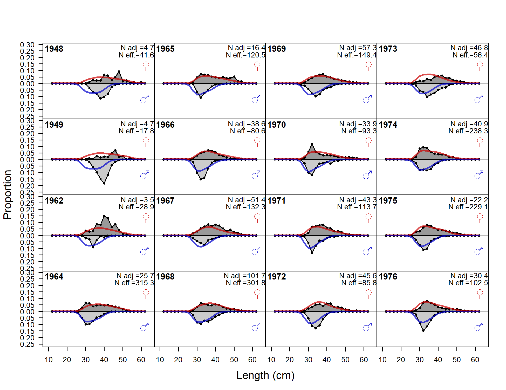
Length comps, retained, Summer (S) (plot 1 of 4).
'N adj.' is the input sample size after data-weighting adjustment. N eff. is the calculated effective sample size used in the McAllister-Iannelli tuning method.
file: comp_lenfit_flt4mkt2_page1.png
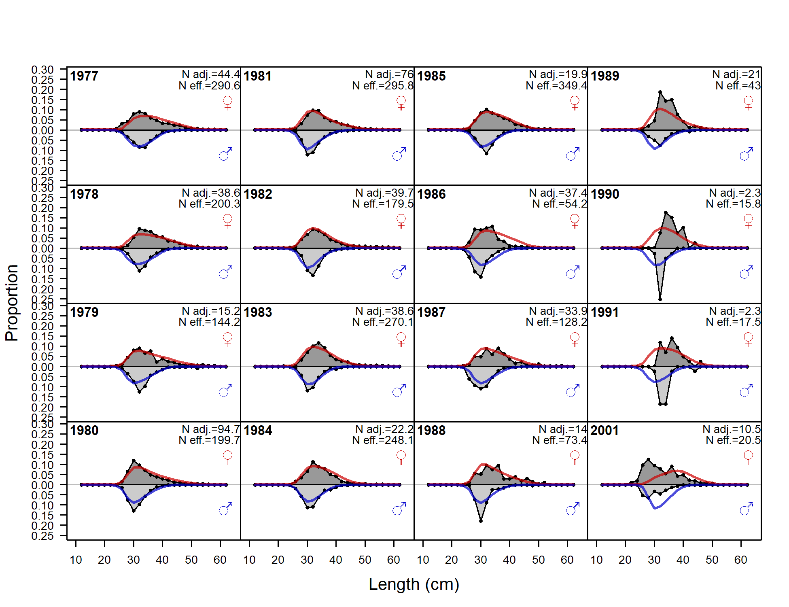
Length comps, retained, Summer (S) (plot 2 of 4)
file: comp_lenfit_flt4mkt2_page2.png
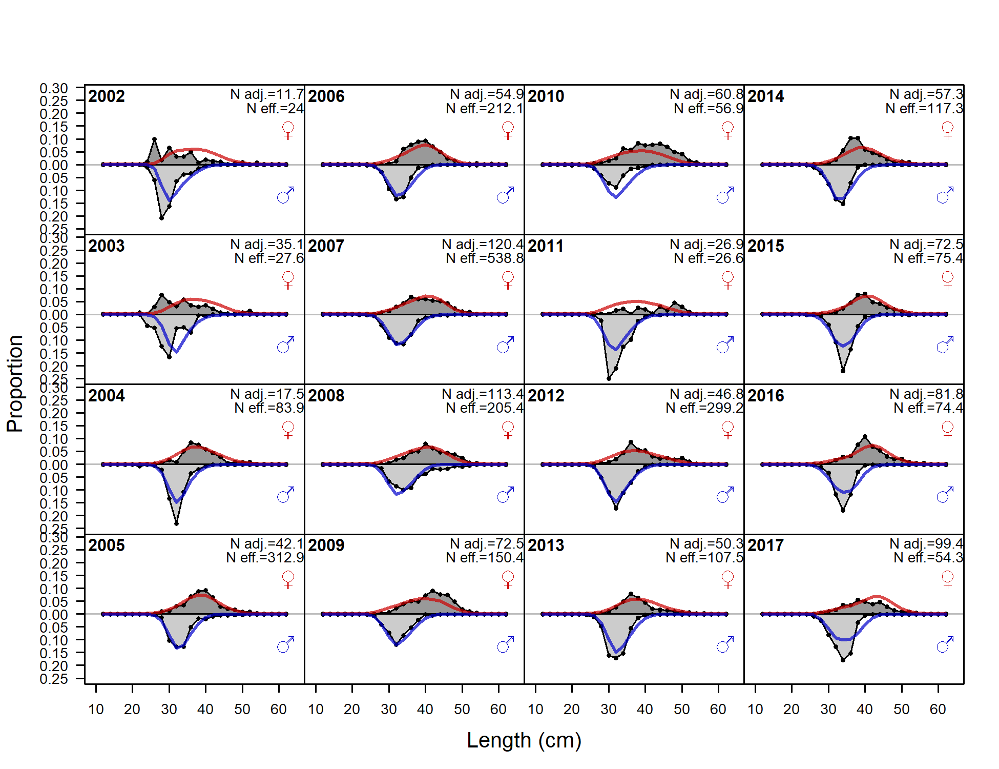
Length comps, retained, Summer (S) (plot 3 of 4)
file: comp_lenfit_flt4mkt2_page3.png
Length comps, retained, Summer (S) (plot 4 of 4)
file: comp_lenfit_flt4mkt2_page4.png
Pearson residuals, retained, Summer (S) (max=6.55) (plot 4 of 4)
Closed bubbles are positive residuals (observed > expected) and open bubbles are negative residuals (observed < expected).
file: comp_lenfit_residsflt4mkt2_page4.png
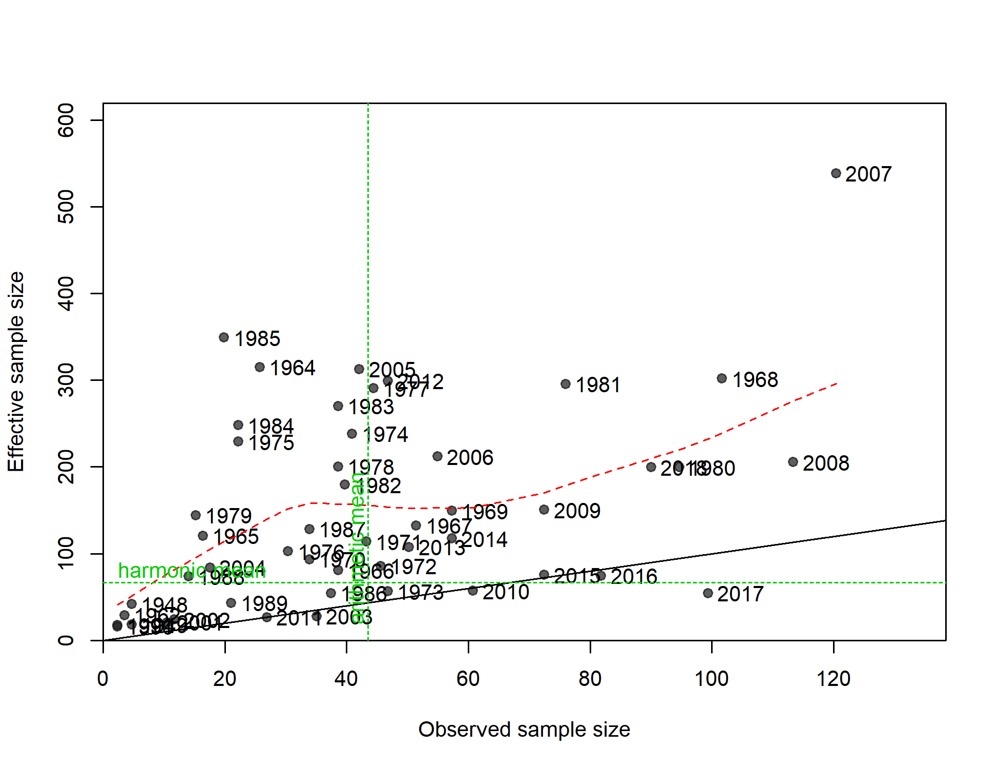
N-EffN comparison, Length comps, retained, Summer (S)
file: comp_lenfit_sampsize_flt4mkt2.png
.png)
Mean length for Summer (S) with 95% confidence intervals based on current samples sizes.
Francis data weighting method TA1.8: thinner intervals (with capped ends) show result of further adjusting sample sizes based on suggested multiplier (with 95% interval) for len data from Summer (S):
0.4076 (0.3008-0.6335)
For more info, see
Francis, R.I.C.C. (2011). Data weighting in statistical fisheries stock assessment models. Can. J. Fish. Aquat. Sci. 68: 1124-1138. https://doi.org/10.1139/f2011-025
Length comps, discard, Summer (S).
'N adj.' is the input sample size after data-weighting adjustment. N eff. is the calculated effective sample size used in the McAllister-Iannelli tuning method.
file: comp_lenfit_flt4mkt1.png

Pearson residuals, discard, Summer (S) (max=5.4)
Closed bubbles are positive residuals (observed > expected) and open bubbles are negative residuals (observed < expected).
file: comp_lenfit_residsflt4mkt1.png
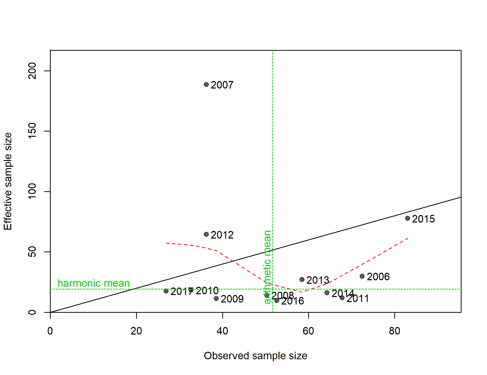
N-EffN comparison, Length comps, discard, Summer (S)
file: comp_lenfit_sampsize_flt4mkt1.png
Mean length for Summer (S) with 95% confidence intervals based on current samples sizes.
Francis data weighting method TA1.8: thinner intervals (with capped ends) show result of further adjusting sample sizes based on suggested multiplier (with 95% interval) for len data from Summer (S):
0.4076 (0.2978-0.617)
For more info, see
Francis, R.I.C.C. (2011). Data weighting in statistical fisheries stock assessment models. Can. J. Fish. Aquat. Sci. 68: 1124-1138. https://doi.org/10.1139/f2011-025
Length comps, whole catch, Triennial - Early.
'N adj.' is the input sample size after data-weighting adjustment. N eff. is the calculated effective sample size used in the McAllister-Iannelli tuning method.
file: comp_lenfit_flt5mkt0.png
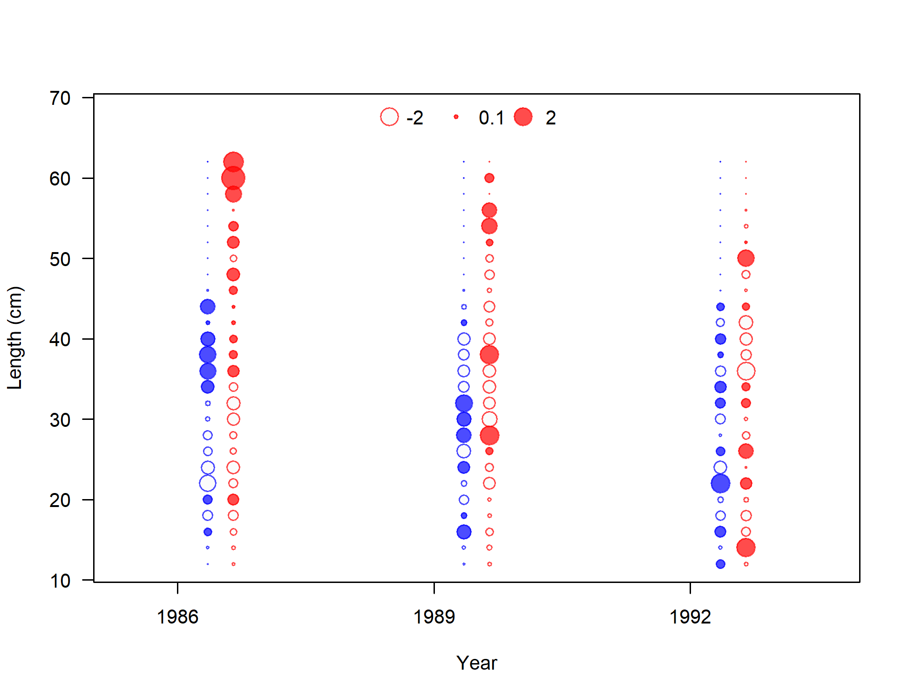
Pearson residuals, whole catch, Triennial - Early (max=3.22)
Closed bubbles are positive residuals (observed > expected) and open bubbles are negative residuals (observed < expected).
file: comp_lenfit_residsflt5mkt0.png

N-EffN comparison, Length comps, whole catch, Triennial - Early
file: comp_lenfit_sampsize_flt5mkt0.png

Mean length for Triennial - Early with 95% confidence intervals based on current samples sizes.
Francis data weighting method TA1.8: thinner intervals (with capped ends) show result of further adjusting sample sizes based on suggested multiplier (with 95% interval) for len data from Triennial - Early:
0.1632 (0.1436-Inf)
For more info, see
Francis, R.I.C.C. (2011). Data weighting in statistical fisheries stock assessment models. Can. J. Fish. Aquat. Sci. 68: 1124-1138. https://doi.org/10.1139/f2011-025
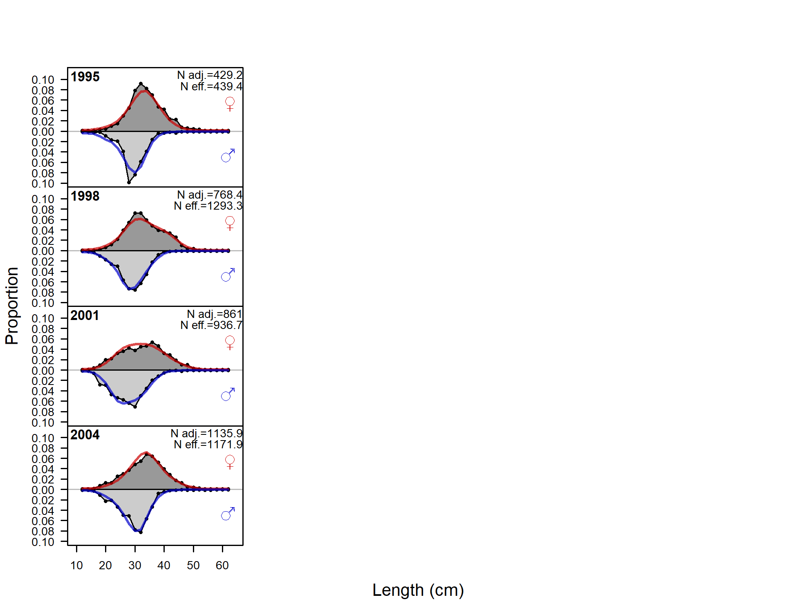
Length comps, whole catch, Triennial - Late.
'N adj.' is the input sample size after data-weighting adjustment. N eff. is the calculated effective sample size used in the McAllister-Iannelli tuning method.
file: comp_lenfit_flt6mkt0.png
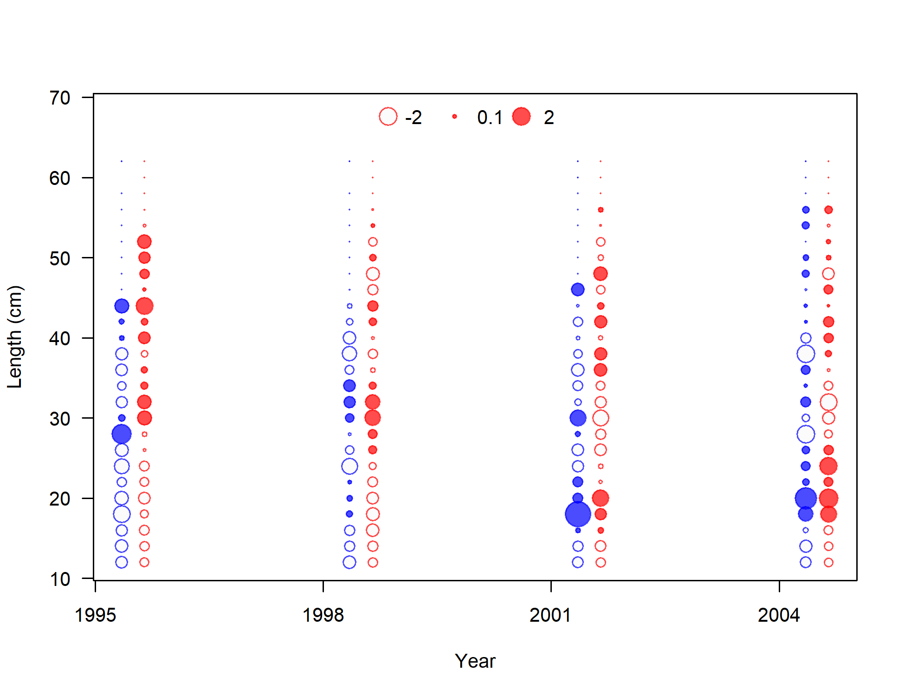
Pearson residuals, whole catch, Triennial - Late (max=3.9)
Closed bubbles are positive residuals (observed > expected) and open bubbles are negative residuals (observed < expected).
file: comp_lenfit_residsflt6mkt0.png
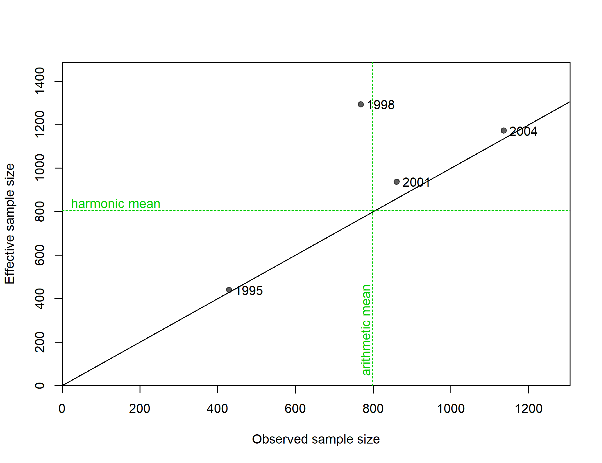
N-EffN comparison, Length comps, whole catch, Triennial - Late
file: comp_lenfit_sampsize_flt6mkt0.png

Mean length for Triennial - Late with 95% confidence intervals based on current samples sizes.
Francis data weighting method TA1.8: thinner intervals (with capped ends) show result of further adjusting sample sizes based on suggested multiplier (with 95% interval) for len data from Triennial - Late:
0.3755 (0.2535-9.9024)
For more info, see
Francis, R.I.C.C. (2011). Data weighting in statistical fisheries stock assessment models. Can. J. Fish. Aquat. Sci. 68: 1124-1138. https://doi.org/10.1139/f2011-025
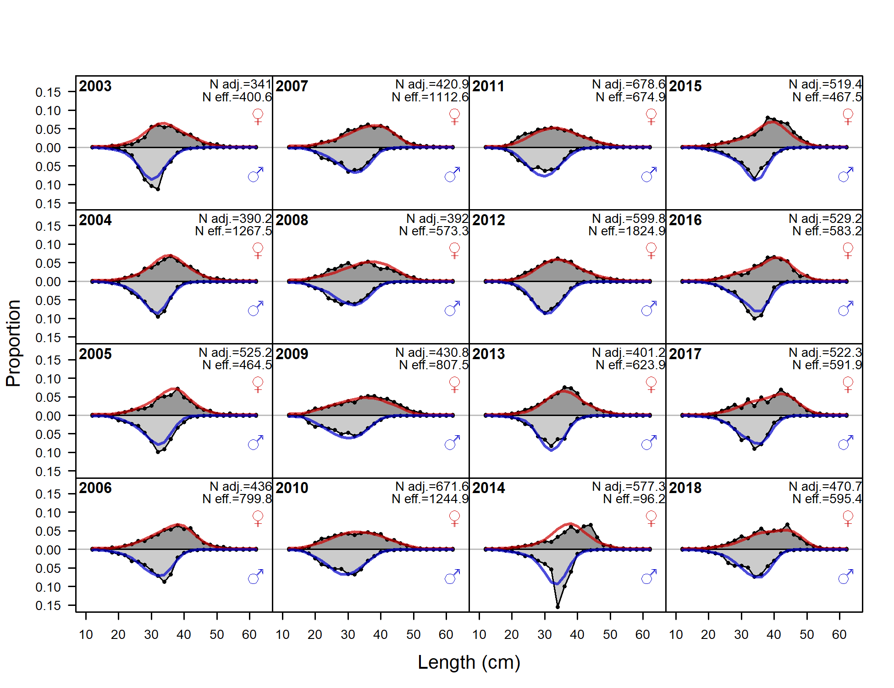
Length comps, whole catch, NWFSC West Coast Groundfish Bottom Trawl Survey.
'N adj.' is the input sample size after data-weighting adjustment. N eff. is the calculated effective sample size used in the McAllister-Iannelli tuning method.
file: comp_lenfit_flt7mkt0.png
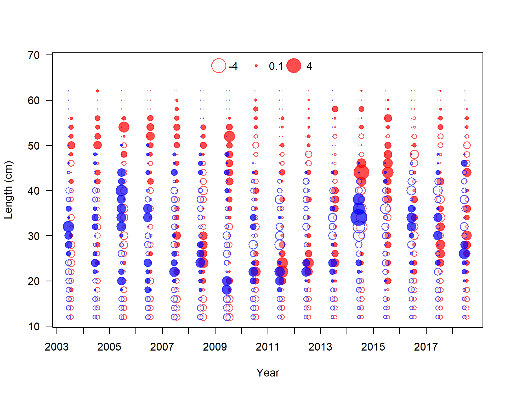
Pearson residuals, whole catch, NWFSC West Coast Groundfish Bottom Trawl Survey (max=5.08)
Closed bubbles are positive residuals (observed > expected) and open bubbles are negative residuals (observed < expected).
file: comp_lenfit_residsflt7mkt0.png

N-EffN comparison, Length comps, whole catch, NWFSC West Coast Groundfish Bottom Trawl Survey
file: comp_lenfit_sampsize_flt7mkt0.png

Mean length for NWFSC West Coast Groundfish Bottom Trawl Survey with 95% confidence intervals based on current samples sizes.
Francis data weighting method TA1.8: thinner intervals (with capped ends) show result of further adjusting sample sizes based on suggested multiplier (with 95% interval) for len data from NWFSC West Coast Groundfish Bottom Trawl Survey:
0.5053 (0.3453-1.3432)
For more info, see
Francis, R.I.C.C. (2011). Data weighting in statistical fisheries stock assessment models. Can. J. Fish. Aquat. Sci. 68: 1124-1138. https://doi.org/10.1139/f2011-025

Length comps, aggregated across time by fleet.
Labels 'retained' and 'discard' indicate discarded or retained sampled for each fleet. Panels without this designation represent the whole catch.
file: comp_lenfit__aggregated_across_time.png
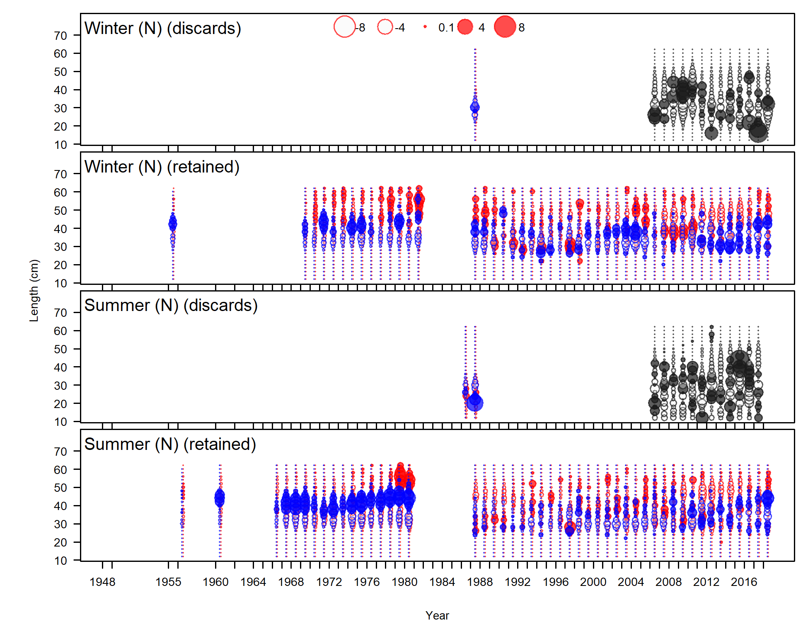
Pearson residuals, comparing across fleets (plot 1 of 3)
Closed bubbles are positive residuals (observed > expected) and open bubbles are negative residuals (observed < expected).
file: comp_lenfit__page1_multi-fleet_comparison.png
Pearson residuals, comparing across fleets (plot 2 of 3)
file: comp_lenfit__page2_multi-fleet_comparison.png
Pearson residuals, comparing across fleets (plot 3 of 3)
file: comp_lenfit__page3_multi-fleet_comparison.png
{kind=link}
{kind=link}
{kind=link}
{kind=link}
{kind=link}
{kind=link}
{kind=link}
{kind=link}
{kind=link}
{kind=link}
{kind=link}
{kind=link}
{kind=link}
{kind=link}
{kind=link}
{kind=link}
{kind=link}
{kind=link}
{kind=link}
{kind=link}
{kind=link}
{kind=link}
{kind=link}
{kind=link}
{kind=link}
{kind=link}
{kind=link}
{kind=link}
{kind=link}
{kind=link}
{kind=link}
{kind=link}
{kind=link}
{kind=link}
{kind=link}
{kind=link}
{kind=link}